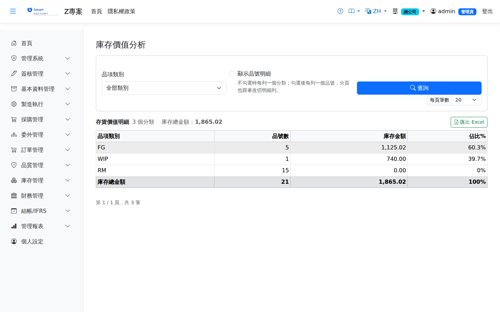

庫存價值分析Inventory Value
路由：/InventoryValue | 庫存金額結構Route: /InventoryValue | Inventory value structure
依品項類別彙總目前廠別的庫存金額與佔比，掌握資金積壓在哪些類別；需要看到個別品號時勾選「顯示品號明細」。Summarizes the current plant's inventory value and share by product category, showing which categories tie up capital; tick "Show product detail" to see individual products.

庫存價值分析畫面截圖（示意，實際欄位/資料依權限與查詢條件而異）Inventory value screenshot (illustrative; actual fields and data vary by permission and query criteria)
查詢Search
1
選擇品項類別（可留空）後點「查詢」；清單下方有分頁導航。Choose a category (optional) and click "Search"; the paging controls sit below the list.
2
預設每列一個類別，依庫存金額由高到低排列，先看出資金集中在哪一類。By default each row is one category, sorted by inventory value from high to low, so you can see first which category holds the most capital.
3
勾選「顯示品號明細」再點「查詢」，改為每列一個品號：同類別的品號排在一起並依金額由高到低，每個類別前有一列標題顯示該類別的分類小計；分頁也改成按明細列切。Tick "Show product detail" and click "Search" again to switch to one row per product: products of the same category are grouped together and sorted by value from high to low, and a heading row before each category shows its subtotal. Paging then splits the detail rows.
4
點「匯出 Excel」匯出目前的查詢結果（沿用相同的類別與顯示模式）。Click "Export Excel" to export the current result (using the same category and display mode).
欄位說明Field reference
查詢條件Query criteria
| 條件Condition | 說明Guide |
|---|---|
| 品項類別Category | 只看某一類別；留空為全部類別Limits the result to one category; leave blank for all categories |
| 顯示品號明細Show product detail | 不勾選時每列一個類別；勾選後每列一個品號Unchecked: one row per category. Checked: one row per product |
報表欄位（依類別，預設）Report fields (by category, default)
| 欄位Field | 說明Guide |
|---|---|
| 品項類別Category | 產品主檔的類別；沒有設定類別的品號歸在「未分類」The category on the product master; products without one are grouped under "Uncategorized" |
| 品號數Items | 該類別目前有庫存的品號數Number of products in the category that currently have stock |
| 庫存金額Inventory Value | 該類別所有品號的庫存金額合計Total inventory value of all products in the category |
| 佔比%Share% | 該類別庫存金額 ÷ 查詢範圍內庫存總金額；各類別佔比加總等於明細模式下各品號佔比的加總Category inventory value ÷ total inventory value within the query scope; the category shares add up to the same total as the product shares in detail mode |
報表欄位（顯示品號明細）Report fields (product detail)
| 欄位Field | 說明Guide |
|---|---|
| 品項類別Category | 品號所屬類別；類別標題列另顯示分類小計（該類別全部金額，不是當頁幾列的和）The product's category; the category heading row also shows the category subtotal (the whole category, not just the rows on the current page) |
| 品號 / 品名Product | 料件代碼與名稱Product code and name |
| 庫存量Stock Qty | 目前廠別各倉合計的在庫數量On-hand quantity summed across all warehouses of the current plant |
| 單位UOM | 庫存計量單位Stock UOM |
| 移動均價Avg Cost | AVCO 移動加權平均單位成本AVCO moving average unit cost |
| 庫存金額Inventory Value | 庫存量 × 移動均價Stock quantity × moving average cost |
| 佔比%Share% | 該料件庫存金額 ÷ 查詢範圍內庫存金額總額，用於辨識高值料件（ABC 分析）Inventory value of the item ÷ total inventory value within the query scope, used to identify high-value items (ABC analysis) |